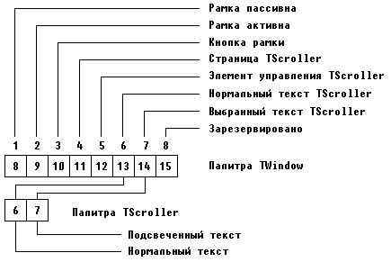
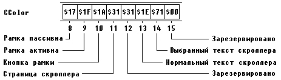

|
|
|
|
Цвет изображения
Все цвета в Turbo Vision определяются системой палитр: за каждым стандартным видимым элементом закреплен свой набор условных номеров цветов, называемый палитрой. Размер палитры (количество определенных для видимого элемента цветов) зависит от функциональности элемента: чем сложнее элемент, чем больше функций он выполняет, тем богаче его палитра (каждому элементу палитры приписывается некоторая функциональность: один элемент ответственен за фон изображения, другой - за текст, третий выделяет специальные символы и т.д.). Например, для скроллера палитра состоит всего из двух элементов: первый элемент определяет цвет основного текста, второй - цвет выделенного текста. Обычно скроллер входит в качестве терминального видимого объекта в группу, палитра которой будет больше. Например, часто скроллер помещается в окно TWindow, палитра которого насчитывает уже 8 элементов (см. рис. 17.2).

Рис. 17.2. Связь палитры TScroller с палитрой TWindow
Палитры образуют систему связанных друг с другом ссылок: каждый элемент палитры содержит не какой-то конкретный цвет или его код, а целое число, указывающее на номер элемента в палитре своего владельца. Если владелец входит в группу, содержимое его палитры устанавливает связь с нужными элементами палитры этой группы и т.д. Ссылки завершаются на «владельце всех владельцев», т.е. на программе: только палитра TProgram и его потомков содержит не ссылки, а сами байты цветовых атрибутов.
Пусть, например, при формировании изображения в методе Draw скроллера выбран первый элемент палитры (нормальный текст). Этот элемент содержит число 6, указывающее номер шестого элемента палитры владельца TScroller. Если владельцем скроллера является объект TWindow, это число означает ссылку на шестой элемент палитры TWindow, который содержит число 13 как ссылку на тринадцатый элемент владельца окна (рис. 17.2). Если, наконец, владельцем окна является программа, то число 13 - это ссылка на тринадцатый элемент палитры TProgram, который содержит байт атрибутов $1Е, т.е. символы будут выводиться желтым цветом на синем фоне (рис. 17.3).
Чтобы получить цвет элемента, используется обращение к функции GetColor. Эта функция просматривает всю цепочку ссылок от текущего видимого элемента до программы и найденный таким образом байт атрибутов из палитры TProgram возвращает в качестве результата. Параметром обращения к функции является номер элемента палитры видимого объекта. Если указан номер несуществующего в данной палитре элемента, функция вернет атрибуты $CF и изображение будет выводиться мигающими белыми символами на красном фоне. Такого сочетания цветов нет ни в одной стандартной палитре, поэтому появление мигающих бело-красных символов на экране
сигнализирует о непредусмотренном разработчиками Turbo Vision функциональном использовании элемента. Если, например, вставить кнопку TButton в текстовое окно TWindow, то окажется, что первый элемент палитры TButton (нормальный текст кнопки) ссылается на 10-й элемент палитры владельца, в то время как в палитре TWindow только 8 элементов.

Рис. 17.3. Фрагмент палитры TProgram
Чтобы изменить цвет изображения, нужно либо изменить ссылку в палитре элемента или его владельца, либо сменить атрибут цвета в палитре TProgram. На практике обычно меняют палитру TProgram, т.к. она определяет цвет всех родственных элементов. Например, если Вы измените элемент палитры, ответственный за цвет основного текста в окне, одновременно все окна изменят свой цвет нужным образом, что, по всей видимости, будет логически правильным.
Палитры Turbo Vision задаются в виде обычных текстовых строк. Это дает возможность применять к палитрам все операции и преобразования, которые используются при работе со строковыми данными. Для изменения k-го элемента палитры TProgram следует изменить k-ый символ в строке, указатель на которую возвращает функция GetPalette. Пусть, например, нам нужно, чтобы во всех окнах скроллера стандартный цвет текста (желтый на голубом фоне) был заменен на белый на черном фоне. Тогда можно использовать такой прием:
Uses Арр,...;
type
TMyProgram = object (TApplication)
Constructor Init;
.....
end;
Constructor TMyProgram.Init;
begin
GetPaletteA[13] := #$0F; {Задаем белый цвет на черном фоне}
TApplication.Init {Инициируем программу}
end;
В этом фрагменте в конструкторе TMyProgram.Init осуществляется замена 13-го элемента палитры: этот элемент отвечает за цвет основного текста скроллера (см. рис. 17.3). После такого изменения во всех скроллерах программы основной текст будет выводиться белыми символами на черном фоне.
Для изменения палитры видимого элемента только одного типа нужно перекрыть его метод GetPalette. Допустим нам необходимо, чтобы скроллер рисовал основной текст таким же цветом, как полосы скроллера. В этом случае мы должны посмотреть, каким по счету элементом в палитре окна-владельца скроллера определяется цвет полос: в нашем примере это элемент с номером 5. Таким образом, палитра скроллера должна содержать значения 5 и 7 вместо прежних 6 и 7 (см. рис. 17.2). Создадим новый объект:
type
TMyScroller = object (TScroller)
Function GetPalette: PPalette; Virtual;
end;
Function TMyScroller.GetPalette: PPalette;
const
NewColors = #5#7;
NewPalette: String [2] = NewColors;
begin
GetPalette := @NewPalette
end;
Существует и менее универсальный, но более простой путь изменения цвета только в одном видимом элементе. Как мы знаем, изображение этого элемента в конечном счете формируется в его методе Draw; если этот метод перекрывается в Вашей программе, а в некоторых случаях, например в скроллере, он должен обязательно перекрывается, то можно воздействовать на цвет непосредственно при обращениях к процедурам MoveChar и MoveStr. Например:
type
MyScroller = object (TScroller)
Procedure Draw; Virtual;
end;
Procedure MyScroller.Draw;
var
Color: Byte;
.....
begin
(* Color := GetColor(l); {Стандартный цвет скроллера} *)
Color := $0F; {Задаем белые символы на черном фоне}
.....
MoveChar(...,...,Color,...);
MoveStr(...,...,Color);
.....
end;
В этом примере в строке комментария (* ..... *) указывается обычный способ получения стандартного цвета основного текста скроллера. Вместо этого желаемый цвет задается нужными атрибутами в переменной Color, которая затем используется при обращениях к процедурам MoveChar и MoveStr.
Палитра TProgram насчитывает 63 элемента и учитывает все возможные функциональные действия, осуществляемые видимыми элементами (см. прил.П6). Более того, этот объект на самом деле имеет три 63-элементных палитры: CColor (цветная палитра), CBlackWhite (черно-белая) и CMonoChrome (монохромная). В установочной секции модуля Views на основе тестирования аппаратных средств ПК из этих палитр выбирается рабочая палитра, которая затем и будет использоваться при формировании изображений. При необходимости Вы можете переустановить палитру TProgram с помощью глобальной процедуры SetVideoMode, например:
Program MyProgram; Uses
Views,....;
var
Main: TApplication;
.....
begin {Начало основной программы}
SetVideoMode(smBW80); {Выбрать черно-белую палитру}
Main.Init; {Инициация программы}
.....
end;
Обращение к SetVideoMode должно предшествовать инициации основной программы, работающей в среде Turbo Vision. Параметром обращения к этой процедуре может быть одна из следующих констант:
const
smBW80 = $002; {Черно-белый режим работы цветного адаптера}
smCO80 = $003; {Цветной режим работы}
smMono = $007; {Монохроматический адаптер}
Эти константы можно дополнять константой
const
smFont8x8 = $100; {Задает 43/50 строк для экрана EGA/VGA.}
для задания режима вывода 43 или 50 строк на экране дисплея, оснащенного адаптером EGA или VGA. Например:
SetVideoMode(smC080+smFont8x8);
|
|
|
|